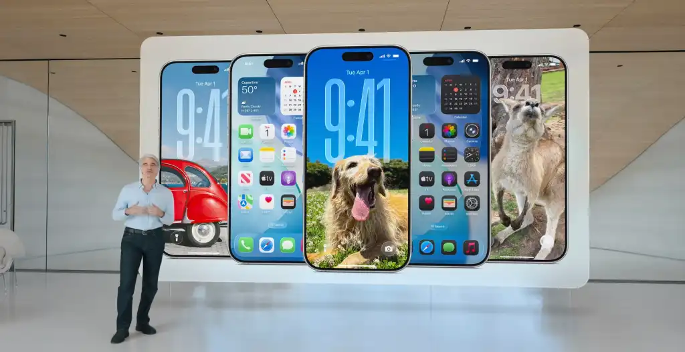
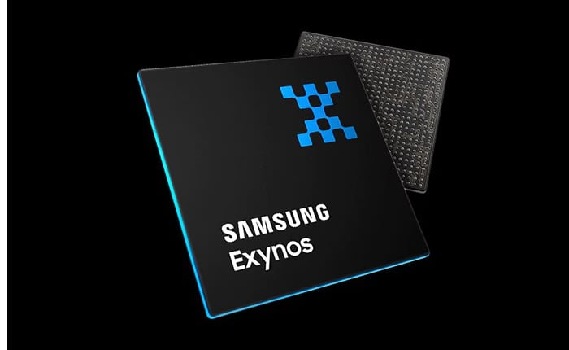
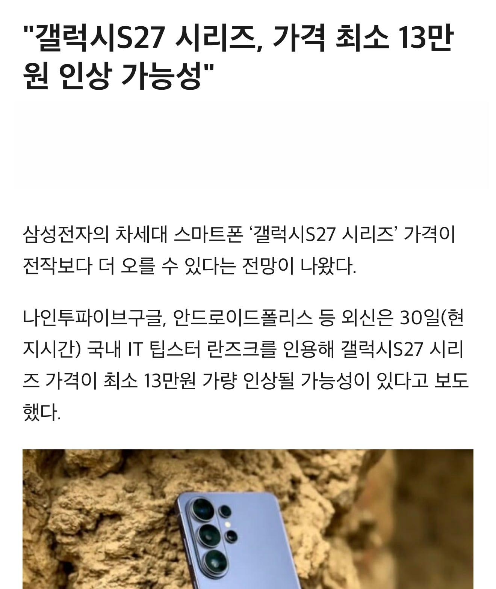
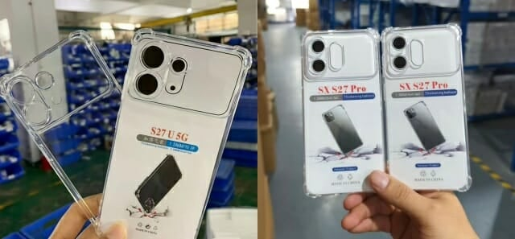
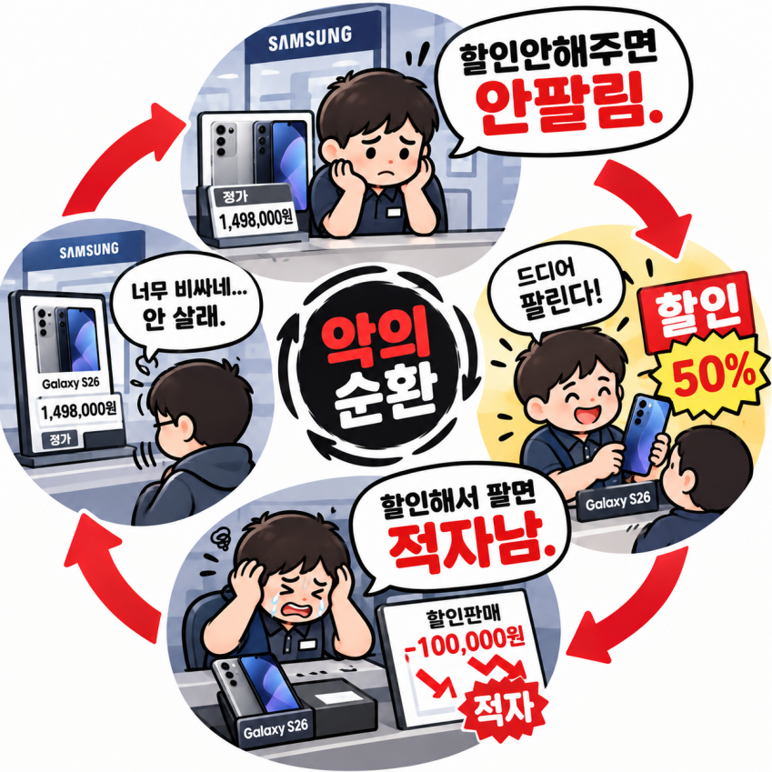

16년만에 애플 스탠다드 모델과 같은 분기에 맞대결
갤럭시S27, S27+, S27프로, S27울트라 - 2월 출시 예정
아이폰에어2, 아이폰18, 아이폰18e - 3월 출시 예정

갤럭시S27, S27+, S27프로 - 엑시노스 탑재
S27울트라 - 미정

용량별 최소 13만원 ~ 최대 27만원 인상 예정

아이폰과 같은 플래토 디자인 첫 공개
삼성MX
2026년 - 약 5조8000억 조 적자 전망 (연말부터 출하량 30% 감축)
2027년 - 약 15조 적자 전망

S2의 라이벌 마케팅이 지금의 갤럭시를 있게 만들어준 마케팅이라 대좆망하지 읺는 이상 바꾸기 쉽지 읺지